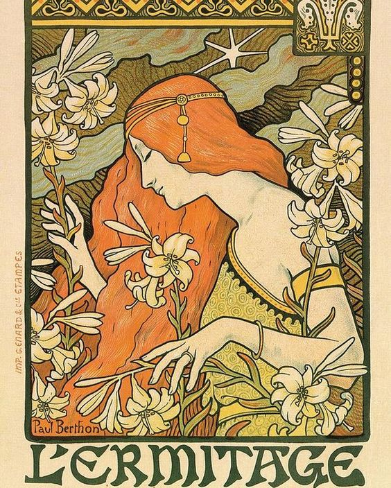

E c c e n t r i c
Ik ontdekte dit font per toeval toen ik richting station Alkmaar liep. Het werd vertoond op een reclamebord op de stoep voor de kapperszaak 'Figaro kappers'. Het font sprak me aan omdat ik nog niet eerder zoiets gezien had. Het is een heel sierlijk statig lettertype met schreven aan de onder-en bovenkant en de bovenste delen van de letters staan heel hoog, waardoor ze nog langer lijken.
-
Eigen foto 
Figaro Kappers website
Alfabet
Zo ziet het alfabet eruit van Eccentric Std regular. Zoals je ziet zijn alle letters heel slank en langwerpig. Het is een monoline display met een volledig kapitaal, een smal lichaam, ook wel hoog getailleerd. Omdat de dwarsbalken en hoofdverbindingen zich meer dan halverwege de lettervormen bevinden, ziet elke letter (behalve de W) er langbenig uit.
Speciale tekens
Ook de speciale tekens zijn allemaal heel langgerekt en veel tekens hebben schreven net zoals de letters.
Evolutie
-
Roman Square c. 1 CE -
EccentricTM font family 1881 -
Helvetica Pro Light 1957
Ik heb onderzoek gedaan naar de evolutie van letters omdat ik wilde kijken wat voor soort letters er vooraf gingen aan het font EccentricTM font family. Ik keek een filmpje en ik vond dat 'Roman Square c. 1 CE' een voorloper zou kunnen zijn van Eccentric, omdat het ook schreven heeft aan de onderkant van de poten van de letter 'A'. Verder is er contrast qua dikte van de letter als je kijkt naar de benen van de 'A' en de schreven.
Wat er bij Eccentric werd toegevoegd zijn schreven aan de bovenkant, en het contrast is er niet meer, want alle onderdelen zijn even dik.
Bij Helvetica Pro Light is er nog steeds geen contrast, alle elementen zijn even breed. Inmiddels zijn alle schreven verdwenen en omdat ook de bovenkant en de onderkant van de letter scherp zijn afgesneden, krijgt de letter een strakke en moderne uitstraling, in vergelijking met Eccentric.
Historie
De officiële naam van het font is EccentricTM font family. De letters zijn heel slank en hebben grote schreven, waardoor het een vintage uitstraling krijgt. Het werd vroeger ook in allerlei vormen toegepast, zoals playbills en modeadvertenties. Het is ontworpen door Gustav F. Schroeder in 1881 en is uitgebracht door een gieterij ‘Monotype Corporation.’ Schroeder was een ponssnijder, geboren in 1861 in Berlijn en hij maakte vele lettertypen. Hij werkte eind 19e eeuw bij de Central Type Foundry in St. Louis en vervolgens bij ATF. Zijn lettertypen worden geïnspireerd door het Victoriaanse, kunst- en ambachts- en art nouveau-tijdperk.
-
Victoriaans - 
Art Nouveau -
Arts & Crafts
Toepassingen
Ik kon vrij weinig vinden qua toepassingen, maar ik heb wel deze reisgids gevonden. Ik denk dat het een Franse reisgids is, want het heet 'Carnet de Voyage'. Het ontwerp van de cover geeft me wel een soort communistische indruk, omdat ik veel rood zie, een ster en de trein doet me denken aan industrialisatie.
Bronnen